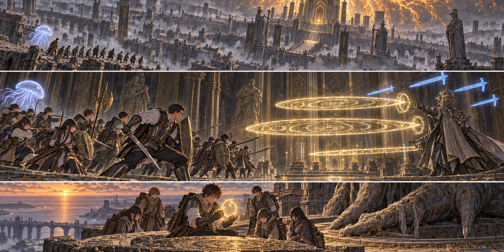

DAY92 / TURN1−102
帰るところまでが、仕事だ。

凛「持って帰ろう」
【DAY92｜朝、渡すもの】先生が教会へ戻った時、翼はもう靴紐を結び直していた。飛べるのは、自分で歩いて登録した場所まで。先生は灰の王都から教会へ戻り、ゴドリックの大ルーンを包んだ布を、今度こそ翼の手に渡した。
重さは、持てないほどではない。そのことが翼には妙だった。これほど大事なものなのに、荷袋へ収まる。落とせる。忘れられる。自分が戻れなければ、これも戻らない。「橋の巨人は倒さなくていい。塔へ届かなければ、持って帰ってくれ」。先生の言葉に、翼は布の結び目をもう一度確かめた。
「先生も、今日の飯を食べるところまでは」。翼が言うと、先生は小さく笑った。「そこは約束する」。主力が持つ食料は、十三人の今日の分まである。次の補給は必ず要る。先生はその確認を済ませ、自分の登録している灰の王都へ戻った。第三隊六人は城の奥まった小部屋へ。行き先の違う光が、朝の教会から消えた。
【灰の大路｜2d6＝4・1＋4＝9】昨夜は見えていた階段が、朝の風で半分埋まっていた。建物を目印にすればいい、という地図の読み方が通じない。屋根と地面の境がない。先生は先へ急ぐ足を止め、蓮と、踏んだ跡が崩れない幅を確かめた。
花は弓を布の内側へ抱えた。灰が弦にも睫毛にも付く。敵を一体も倒していないのに、時間だけが過ぎた。けれど、皆が歩いた跡へ次の者が足を置くたび、落ちるかもしれなかった一人が落ちずに済んでいる。そういう進み方も、進んでいるのだと花は思った。
大聖堂へ続く階段を上がる。以前、黄金の幻影と戦った場所。その輪郭は残っていた。だからこそ、中に立つ男がはっきり見えた。耳と目を思わせる装飾。顔を覆う鉄の兜。円卓で情報を求めた相手が、今は道の中央にいる。
【百智卿】「王に至る道を、お前たちの列で埋めるつもりか」。ギデオンは、先生の後ろへ目を向けるように兜を動かした。「数を揃えても、知った末に何が待つかは変わらん」。先生は足を止めたまま、盾を前へ出した。「それを確かめてから、帰す。ここで終わったことにはできない」。
「帰る場所か。まだ、それを数えているのだな」。杖が上がる。先生は、話せば通してもらえる距離が終わったことを知った。あの人も王を目指していた。どこで、道を塞ぐ側へ立ったのか。それを聞く時間を作るために、生徒をこの魔術の前へ置くことはできなかった。
【第一局面｜2d6＝2・3＋5＝10】先生は自分に魔力防護をかけて踏み込んだ。大地の誓いが先生と直人を支え、クララが側面へ浮かぶ。一直線に並ぶな、という合図を言い終えるより先に、悠と拓海が左右へ開いた。
金色の輪が広がった。先生は盾を構えたまま、その隙間へ身体を滑らせる。後ろの健太は先生と同じ線を追わず、反対へ踏み出した。輪は通り過ぎて終わりではない。戻る光を見た花が「後ろ、戻る！」と叫び、槍先が二本、射線から下がる。
ギデオンの頭上に青い刃が浮かんだ。正面の先生だけを見ていれば、横の誰かへ飛ぶ。悠の三つの輝石と、拓海の短い一撃が詠唱の間へ届く。敵の手が下がったところへ、直人が大竜爪を叩きつけた。一撃で押し倒せる相手でも、次の一撃を撃たせれば誰かが倒れる。全員で取り囲むより、動ける隙間を残して攻撃をつないだ。
紬は火を呼ばなかった。床のどこに敵がいて、次にどこへ味方が入るか、入れ替わりが速すぎる。昨日、役に立った術が今日も最適とは限らない。代わりに、引いてきた者の顔と指先を見た。まだ治療を呼ぶ声はない。呼ばせないために隠していないかまで、見る。
【第二局面｜2d6＝3・3＋5＝11】先生が一度下がり、健太が槍を伸ばした。狙いが移ったのを見てから、葵が六人へ黄金樹の恵みを届ける。陽太は渦の戦技を使わず、先生が戻るまでの間を走った。大きく振りかぶる力があっても、今はそこに留まることの方が仕事だった。
千夏の矢が兜の側をかすめ、ギデオンが顔をそちらへ振った。先生の剣が腕へ届く。次の詠唱が途切れた一瞬に、陸が踏み込んだ。先生が全てを受け続けているわけではない。引いた時に誰が入るかを、十三人が見失わなかった。
【進捗2＋2＝4｜撃破】百智の王笏が床を打った。先生は追撃の姿勢のまま止まり、男の手がもう術を結ばないことを確かめた。円卓でこちらを測っていた声は、最後まで、ここから先へ進めるとは認めなかった。先生にも、勝ったから答えが出たとは思えなかった。
花は矢筒を下ろし、仲間の顔を順に見た。十三人、全員立っている。誰も赤瓶を使っていない。ほっとした途端、指が少し震えた。昨日は化け物の剣を見ていた。今日は、人の声を聞いてから弓を引いた。良かった、とすぐに言えない勝ち方もある。それでも、帰ってほしい顔がここに揃っていることを、喜ばずにはいられなかった。
主力は灰都の黄金樹の大聖堂の祝福を解放し、十三人それぞれが登録した。前の王都市街で記録した場所を、そのまま使えたことにはしない。今の道を歩き、今の祝福へ届いた記録を付ける。百智の王笏と防具一式は回収して保管。新しい力の性質を知らないまま、装備だけを替えて次へ走ることはしなかった。
【同じ日、神授塔への橋｜2d6＝6・1＋4＝11】翼の目の前で、巨大な矢が橋を横切った。柱の向こうへ出ようとしていた航が止まる。昨日見た巨人は、今日もそこにいた。城の兵の再出現を警戒し、昨日見た獅子にも近づかなかった。六人は遮蔽物の間を歩き直し、戦わずにここまで来ていた。
翼は走る合図をすぐに出さなかった。巨人の顔、弓、次の柱。昨日、先生へ報告した紙の順番を頭の中でなぞる。佑真が後ろの二人へ指を見せた。凛と真央が頷く。「今」。一人ずつ、間を詰めすぎずに走る。巨体が動く音を背中で聞きながら、翼は先頭ではなく最後の足音を数えた。
転送門の向こうで、湊が壁に手をついた。「六人、いる」。何も倒していない。ルーンも増えていない。それなのに翼の膝は笑いかけていた。まだ終わりではない。昇降機を上がり、塔の祝福を六人で確かめ、屋上への階段を進んだ。
屋上には、巨大な二本指の遺骸があった。その前で布を開くと、眠っていた輪郭へ金色の光が戻った。ゴドリックの大ルーン。自分の身体に力が湧くわけではない。誰かの傷が消えるわけでもない。翼は、それでもしばらく見ていた。「持って帰ろう」。凛の声に頷いて、光の戻ったものを、もう一度丁寧に包んだ。
【教会｜狩猟2d6＝6・2＋4＝12】六人が教会へ帰り着く頃、近場へ出ていた狩猟班は鹿三頭を解体していた。三十六食分。留守を守った八人は、薪と水と屋根の補修を進めている。結衣は大ルーンの包みを受け取る前に、まず六人が怪我をしていないかを聞いた。
活性化は成功した。しかし装備とルーンの弧は、まだ別の手順として残っている。主力全員が急に強くなったわけではない。塔の巨人を倒したという戦果も、見つけていない強化素材も書き足さない。翼は報告の最後へ、「六人帰還」と書いた。今日、自分たちが増やせたのは、決戦へ持っていける選択肢だった。
【DAY92｜夕方】灰都で一万五千ルーン、教会の狩りで六ルーン。共有台帳の合計は四万六千百七十六ルーンになった。財布と品物は、それぞれの手元にある。食料六十二食分は教会側、遠征隊は持ってきた最後の十三食分を食べた。明日は、まず補給だ。
先生は食べ終わった袋を畳み、大聖堂の先へ視線を上げた。第一王。その先に、最後の二連戦。九十九日までに決着をつける予定なら、使えるのはあと七日。百日目の終わりという期限は動かない。ここまで来た十三人のためにも、別の場所で働く二十人のためにも、空腹と準備不足でこの一日を無駄にはできなかった。
今回の判定記録
| 判定 | 出目 | 補正 | 合計 |
|---|
| ashApproach | 4+1 | 4 | 9 |
| gideonOpening | 2+3 | 5 | 10 |
| gideonFinish | 3+3 | 5 | 11 |
| tower | 6+1 | 4 | 11 |
| base | 6+2 | 4 | 12 |
抽選前の条件 · 抽選結果